원덕초 그린스마트미래학교 증개축공사
본 계획은 원덕초등학교 교사1동의 철거 및 증·개축, 리모델링을 통해
농촌 소규모 학교의 맥락에 맞는 미래지향적이고 유연한 학습환경을 제안한다.
대지는 낮은 밀도의 주거지와 산, 밭, 하천으로 둘러싸인 자연환경과 인접해 있으며,
이를 적극적으로 수용하기 위해 1층 단일 매스의 낮고 긴 배치를 선택하였다.
이를 통해 교실과 외부공간의 직접적인 연계를 강화하고,
주변 경관과 조화되는 스케일의 학교 공간을 형성하고자 했다.
학교의 중심에는 광장형 공간을 배치하여 교실, 특별교실, 공용공간을 연결하는
커뮤니티 허브로 계획하였다. 이 공간은 일상적인 학습 활동뿐 아니라
공연, 행사, 지역 개방 프로그램 등 다양한 활동을 수용하는 다목적 공간으로 기능한다.
대부분의 교실은 남향으로 배치하여 채광과 조망을 확보하였으며,
각 교실은 데크와 잔디마당 등 전용 외부공간과 연결되어
아이들이 실내와 외부를 자유롭게 오갈 수 있는 환경을 제공한다.
유치원과 특수학급 또한 각각의 외부공간을 갖도록 계획하였다.
건축은 과도한 형식적 표현을 지양하고,
주변 환경의 배경으로 작동하는 절제된 건축을 지향하였다.
단순한 재료와 분절된 매스를 통해 기존 교사동과 증·개축동이
하나의 연속된 풍경으로 인식되도록 계획하였다.
본 계획은 학생 수 감소라는 현실 속에서도
원덕초가 친근하고 따뜻하며 창의적인 학교로 지속될 수 있는
공간적 가능성을 제안하고자 한다.
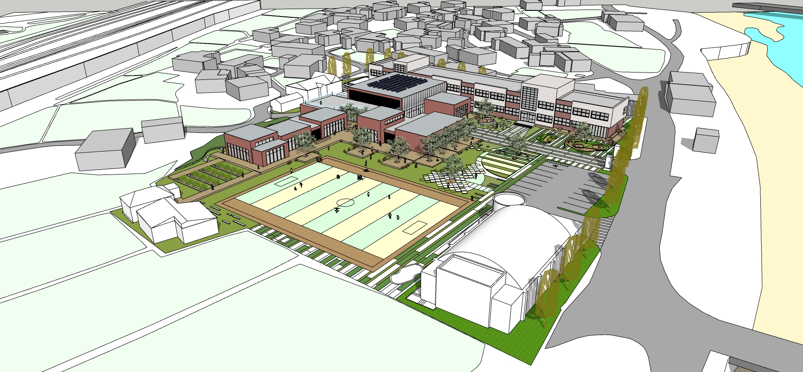
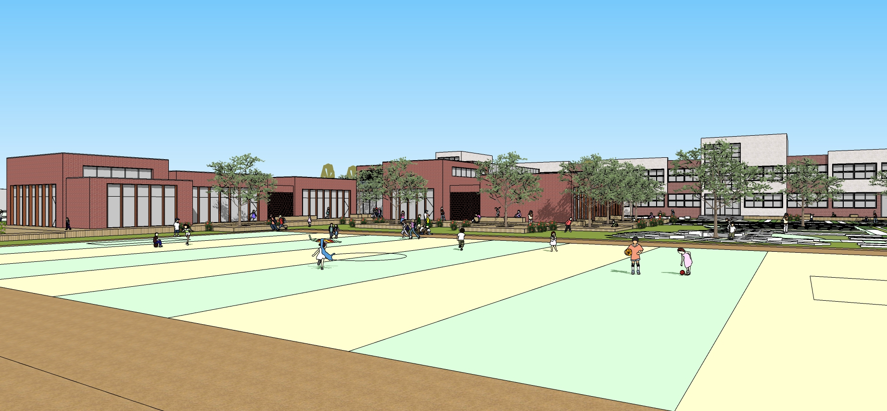
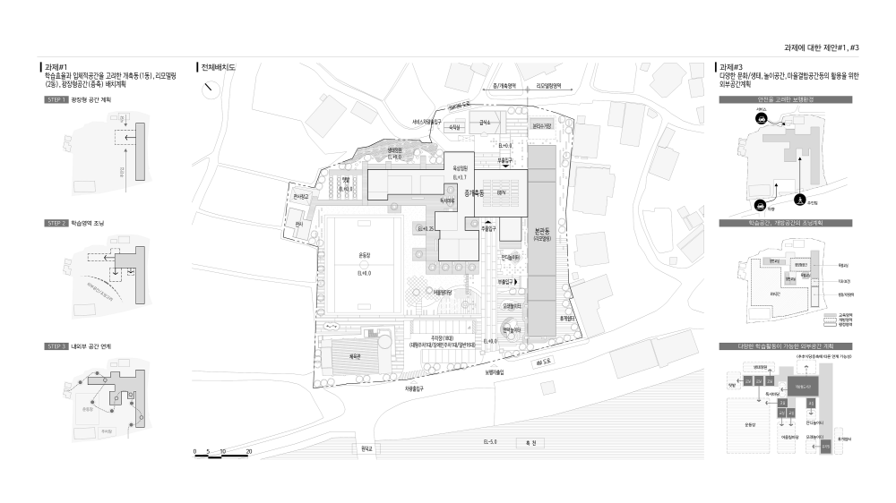
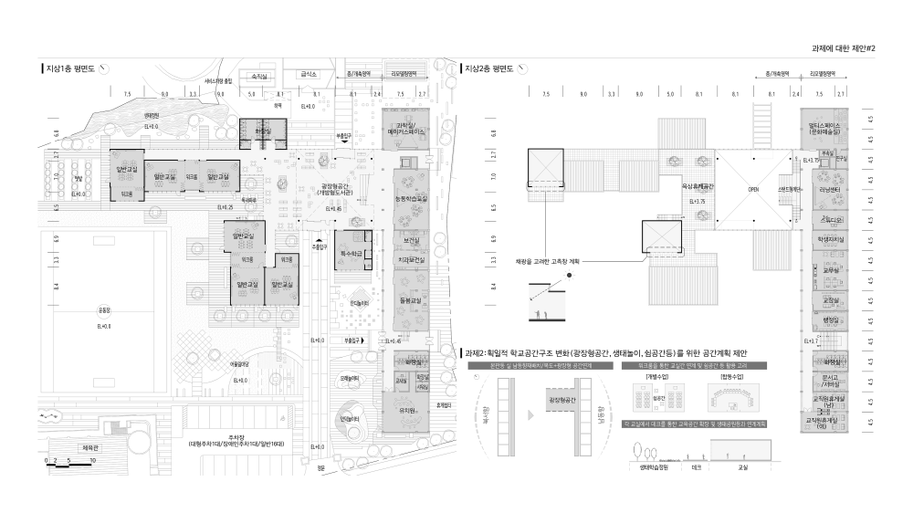
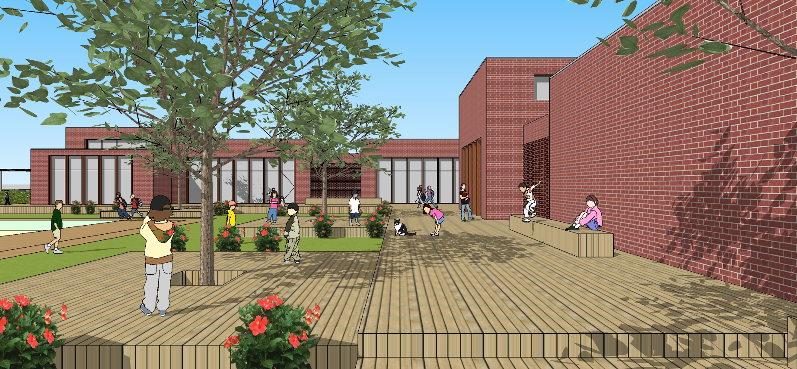
 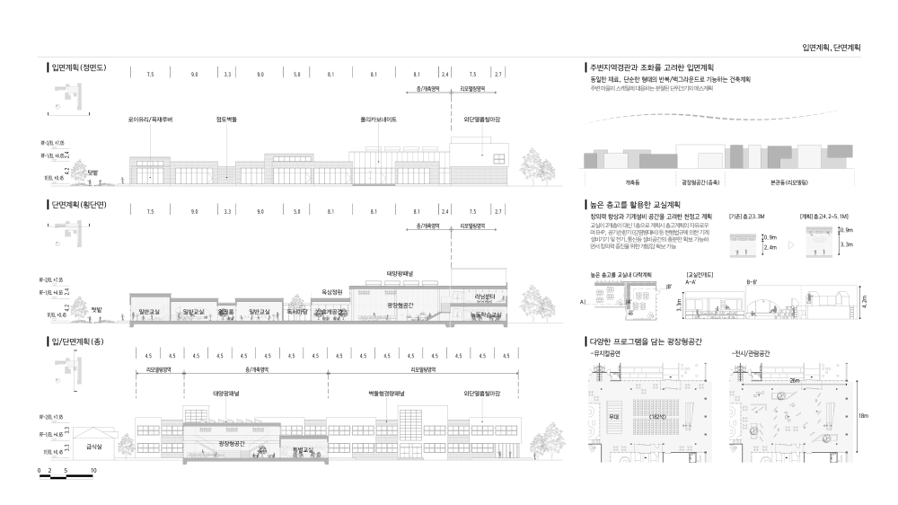
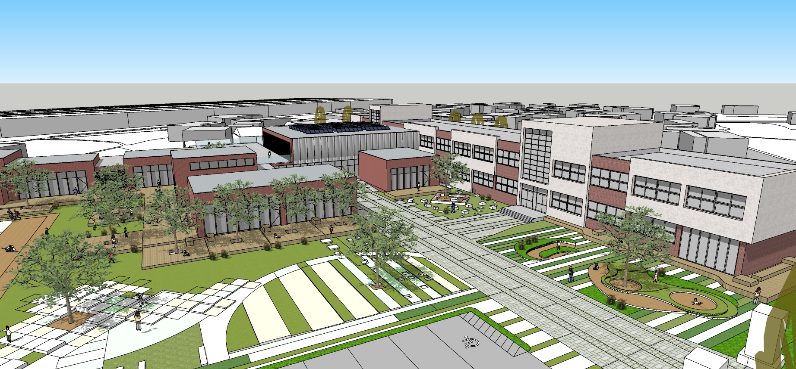
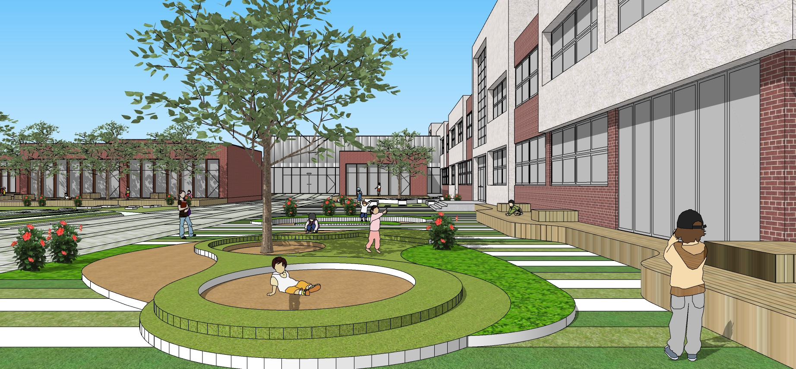
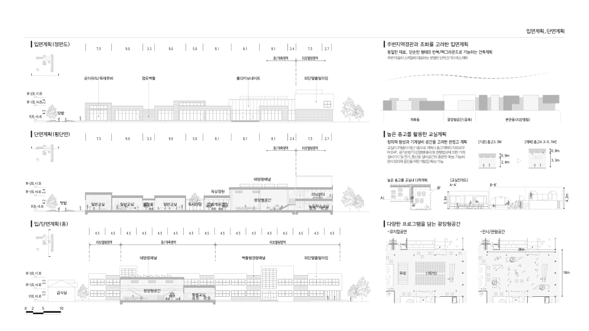
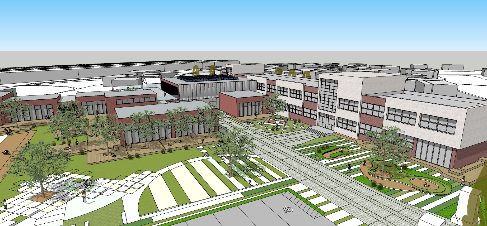
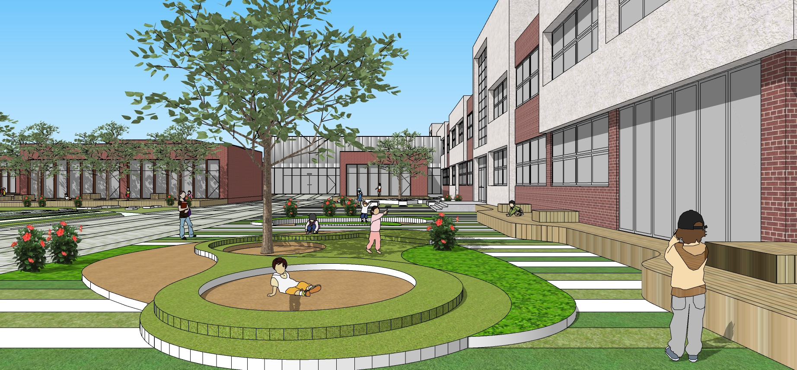
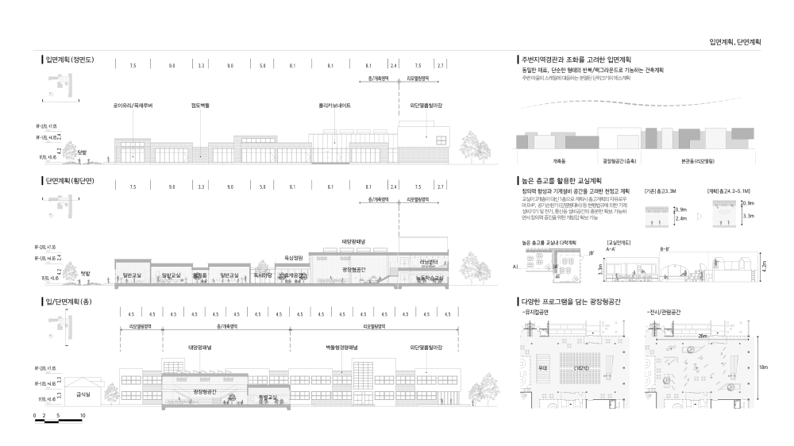
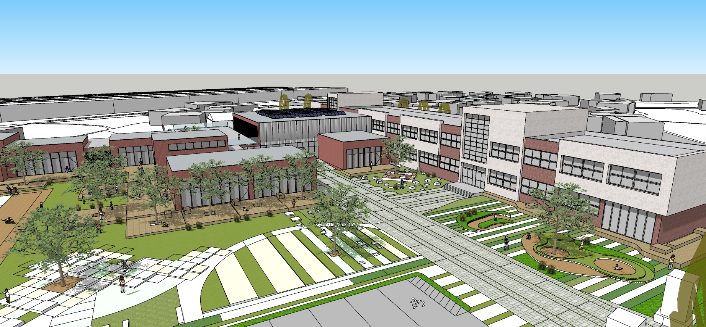
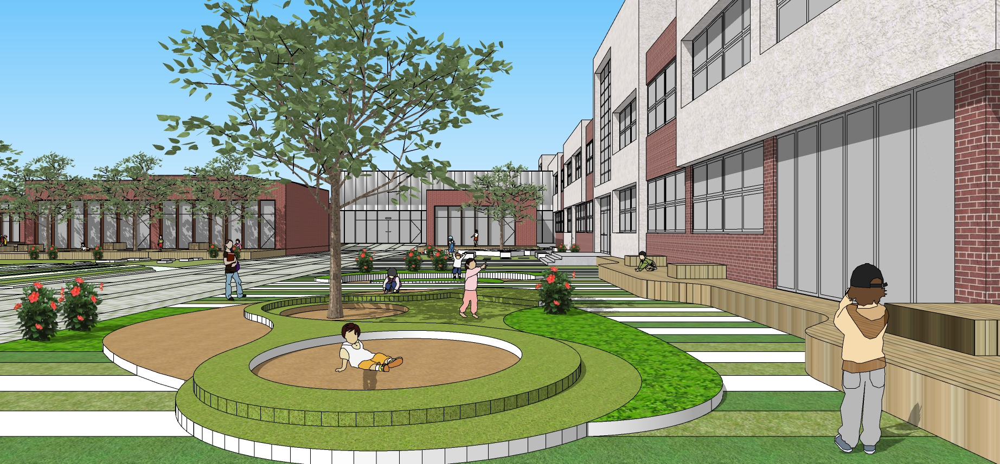